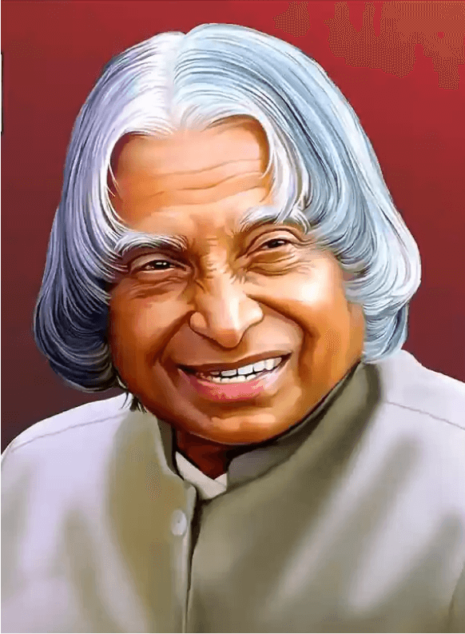

A. p. j Abdul Kalam
1931-2015
Missile Man of India
A. P. J. Abdul Kalam was known as the "Missile Man of Insia."he was born on 15 oct 1931 in Rameswaram, Tamil Nasu. He was an indian aerospace scientist and served as the 11th persodent of india from 2002 to 2007. he studied physics and aerospace enginnering and worked with DRDO and ISRO. he played an important role in india's Missile and space program. he also contribued to the pokhran-|| nuclear tests in 1998.
biographies
- Eternal Quest: life and times of dr kalam by s chandra ;
- president a p j abdul kalam by R K : Anmal publication . 2002
- A P J Abdul Kalam: The Vidionary of India by K Bhushan ,G Katyal; A P H Pub Corp 2002
- A Little Dream (documentary film) by P. Dhanapal ; MInveli Media Works Private Limited, 2008
- The Kalam Effect: My Years With the President by P M Nair ; Harper Collins, 2008
- My Days with Mahatma Abdul Kalam ny Fr A K George; Novel Corporation, 2009
- A . P . J . Abdul Kalam A life by Arun Tiwari; Haper Collins . 2015
- The People's President: Dr A P J Kalam by S M Khan ; Bloomsbury Publishing 2016.